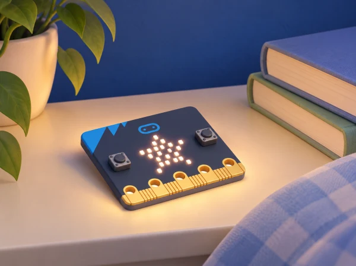

La biblioteca escolar obri un laboratori de projectes digitals per explicar què pot fer una micro:bit. Cada sessió resol un repte curt amb una eixida, una entrada, una estructura de control o un sensor. Els projectes parteixen de la unitat oficial First lessons with MakeCode and the micro:bit; es pot repetir la ruta amb el curs paral·lel de Python. Les paraules i personatges dels exemples són ficticis: no es mostren noms ni emocions reals de l’alumnat.
MakeCode permet construir els sis projectes amb blocs i transferir-los a la placa. La ruta Python recorre els mateixos objectius amb codi textual: mostrar text/icones, bucles d’animació, lectura de botons, variables de recompte, condicions de llum i nombres aleatoris. En cada sessió, l’alumnat pot comparar el diagrama de blocs amb una versió Python preparada pel docent o adaptada a l’editor vigent; la situació no substitueix els tutorials específics de sintaxi.
Guardeu sis programes breus o captures impreses, el diagrama d’entrada-procés-eixida, una taula de proves i una revisió final de la ruta. Valoreu l’ordre dels passos, l’ús de bucles, variables i condicions, la depuració i si el grup pot explicar què limita cada projecte.
BBC micro:bit, MakeCode o Python Editor, llibres i targetes de la maqueta. Confirmeu les funcions de la placa i l’entorn, especialment el sensor de llum i l’acceleròmetre. Si sacsejar o observar LED parpellejant no és accessible, oferiu botó, targeta estàtica o simulació. Cap activitat necessita guardar dades d’alumnes.
La seqüència cobreix els sis projectes de micro:bit First lessons with MakeCode and the micro:bit: Name badge, Beating heart, Emotion badge, Step counter, Nightlight i Rock, paper, scissors. La mateixa seqüència ofereix la via paral·lela de First lessons with Python and the micro:bit, que reutilitza aquests sis projectes per introduir codi textual. La narrativa de biblioteca i les proves són pròpies.